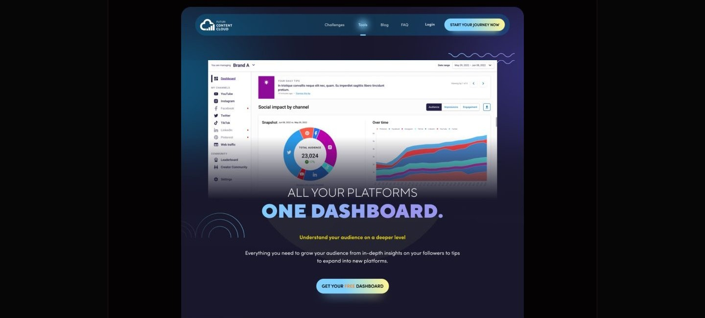
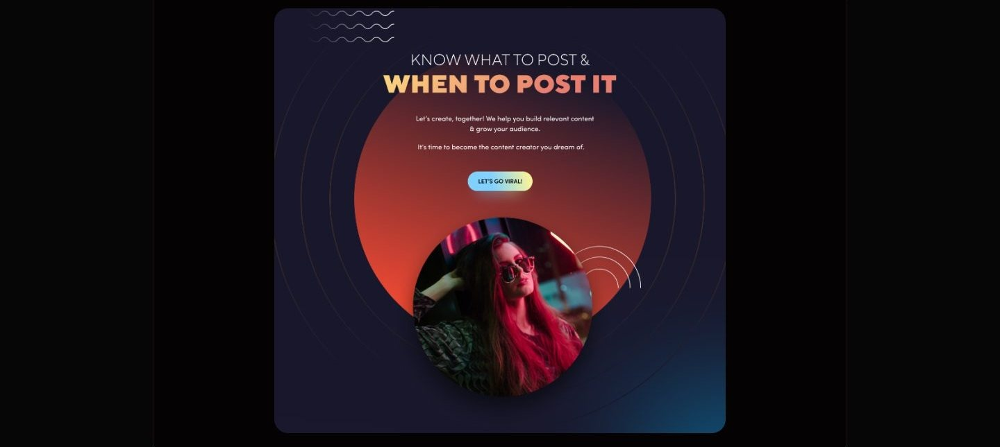

Case study 03 of 11 · Content platform · Independent concept project
Content Cloud
One workspace for planning, publishing, and tracking content.
5 min read

An unsolicited, unaffiliated concept study built around the existing Futuri Content Cloud brand. The name and product belong to Futuri Media, and the research, page designs, component library, and testing plan shown here are my own exploration, never commissioned, endorsed, or shipped.
Marketing an analytics product to creators who distrust dashboards, without hiding the data behind hype.
How each landing section pairs a creator pain point with the exact tool that answers it, ending in one clear action.
Creators post constantly and still fly blind
Scheduling tools tell creators when they posted, not whether any of it worked or what to make next. Competitor platforms each solve one slice: scheduling, calendars, or reporting. Creators end up stitching tools together and still guessing at what to post, when to post it, and why growth stalls.
- No clear signal on which content types actually move an audience.
- Shallow analytics that describe the past instead of guiding the next post.
- Planning, insights, and collaboration split across separate, costly tools.
Desk research covered six competitors including Later, Hootsuite, Buffer, CoSchedule, Sprout Social, and ContentStudio, mapped by features, strengths, and gaps.
The calls that shaped it
Identity first: the hero is the brand behaving like content
The first screen sells belonging before it sells features, so the opening moment is a glitch treated wordmark, not a product shot. The board annotates the hero as a bold, immersive visual dominated by a glitch style treatment of the logo, built to claim a futuristic, creator native identity in the first second. The rejected alternative was the standard SaaS opener, a headline beside a product screenshot and a signup field, which would have front loaded information for a visitor who has not yet decided the brand is for them. This page bets that a creator scrolls for proof once the identity lands, and every section that follows carries one feature and one button to collect that attention. The accepted cost is plain: above the fold there is no feature claim at all, so a visitor hunting for capabilities has to scroll or hit the navigation, and the most valuable screen on the site is spent entirely on tone.

The screenshot is the sales pitch
For creators who already distrust dashboards, an illustration would confirm the suspicion, so the Tools page opens on the interface itself. The Tools page hero pairs the promise of one dashboard for every platform with a full screenshot of the analytics surface: a channel rail on the left, an audience donut in the center, a growth over time chart on the right. The rejected alternative was the abstract or stock illustration most marketing pages reach for, safer to art direct but proof of nothing. Leading with the actual mockup makes the stronger claim, and its cost lands in two places. Interface text at hero scale is decorative rather than readable, so the screenshot works as proof of shape, not documentation. And the mockup's own sample content becomes marketing copy, because the audience totals and daily tips inside the frame are placeholder data, so the image can promise a kind of tool but never a result.

Community gets a section, not a footer icon
The lonely part of creating is treated as a product problem, so the Discord community holds a full section just before the closing pitch. The copy across the landing page keeps naming isolation. One section asks whether you are aimlessly making content and hoping people care, another admits that most days feel like losing the race. Tools alone cannot answer that feeling, so the community section responds in kind, telling the visitor they do not have to do it alone and framing the Discord based creator community as something every user gains access to. The rejected alternative was the usual home for community, a row of social icons in the footer, which costs no space but signals an afterthought. Elevating it to a full section spends an entire scroll on something that is not a tool and pushes the closing summary farther down an already long page, a cost accepted because belonging is the one claim a screenshot cannot make.

Every section earns the next scroll
Between the hero and the closing pitch, each landing section names one creator pain, pairs it with the tool that answers it, and closes on a single action.



How I planned to test it
A moderated walkthrough of these five tasks could show whether a first time visitor finds the tools, the community, and help without prompting, and whether each section's single action reads as the obvious next step. It could not show whether the insights would change what a creator actually posts, and no completed sessions or findings are documented anywhere on these boards.
This chapter is a testing plan for a concept site, not a record of sessions with real creators, and no part of the design has been validated by live usage.
What I learned
When the product screenshot is the hero, its placeholder content becomes marketing copy. The dashboard mockups carry sample totals and filler tips, and anything legible at hero scale reads as a promise, so mock data needs the same curation as the interface around it.
One ask per scroll is a discipline, not a layout preference. Pairing each named creator fear with a single button kept every section focused and honest, and the accepted price is a long page where each section has to earn attention all over again.
A saturated identity on dark surfaces holds together only because every hue is a documented ramp. The eight step tonal scales made contrast decisions on navy backgrounds repeatable, and the shared component sheet meant the navigation, cards, and dropdowns never had to be reinvented across the four pages.
Appendix: foundations and system
The system underneath the marketing surface: a componentized navigation, card, and dropdown library on a 12-column grid, and tonal ramps for every brand color.